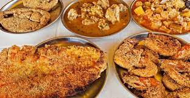

Goa
Food:
The cuisine of Goan people is mostly seafood-based; the staple foods are rice
and fish. Kingfish (vison or visvan) is the one of most commonly eaten.
Other commonly eaten seafood includes pomfret, shark, tuna
sardines, and mackerel amongst other river fishes.
Vegetation:
Coconut trees are ubiquitous and are present in almost all areas of Goa barring
the elevated regions. Much deciduous vegetation, including teak, sal, cashew and mango trees,
is present. Fruits include jackfruits, mangos, pineapples and blackberries.
Climate:
Goa features a tropical monsoon climate under the Köppen climate classification.
Goa, being in the tropical zone and near the Arabian Sea, has a hot and humid climate for most of the year.
The month of May is usually the hottest, seeing daytime temperatures of over
35 °C (95 °F) coupled with high humidity.